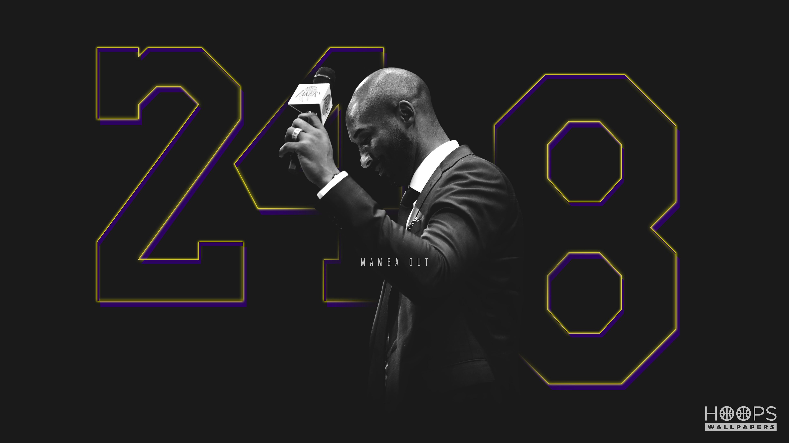

Kobe Bryant
The Black Mamba

Mamba Out!!!
The day Kobe's jersey numbers 8 and 24 were retired at Staple
Center
Here is a list of Kobe Bryant career achievements:
- 1997: As a rookie, Bryant won the NBA Slam Dunk contest and was named to the NBA All-Rookie Second Team.
- 1998: Kobe made his debut NBA All-Star Game appearance and faced his idol, Michael Jordan.
- 2000: The Los Angeles Lakers won the NBA Finals Championship against the Indiana Pacers in six games. Often named one of the best NBA duos in history, Bryant and Shaquille O'Neal were teammates from 1996-2004.
- 2001: Kobe and Shaq brought back the NBA Finals Championship trophy to Los Angeles for the second year in a row.
- 2002: Bryant was unstoppable. Not only did he win his third NBA Finals Championship, but he was also the NBA All-Star Game MVP.
- 2006: Kobe made the switch from No. 8 to No. 24 and in 2006, he had one of the greatest performances in NBA history.
- 2007: For the second time, Bryant was named NBA All-Star Game MVP.
- 2008: In his 20-year NBA career, 2008 is often considered Bryant's best season. He won the NBA MVP for the 2007-08 season and became an Olympic gold medalist at the 2008 Summer Olympics in Beijing.
- 2009: The Los Angeles Lakers won the NBA Finals Championship against the Orlando Magic.
- 2010: The NBA legend won his fifth NBA Finals Championship and was named Finals MVP.
- 2011: For the fourth time, Bryant was rewarded NBA All-Star Game MVP.
- 2012: Kobe and the USA Olympic squad won the gold at the 2012 Summer Olympics in London.
- 2016: On April 13, Bryant's final performance in a Lakers uniform was unforgettable as he orchestrated a 60-point extravaganza in a 101-96 win over the Utah Jazz at Staples Center.
- 2018: Produced by his own multimedia company, Bryant wrote "Dear Basketball," which won an Academy Award in 2018.
This article is for demostration only if you wish to read the full article you can check it out here